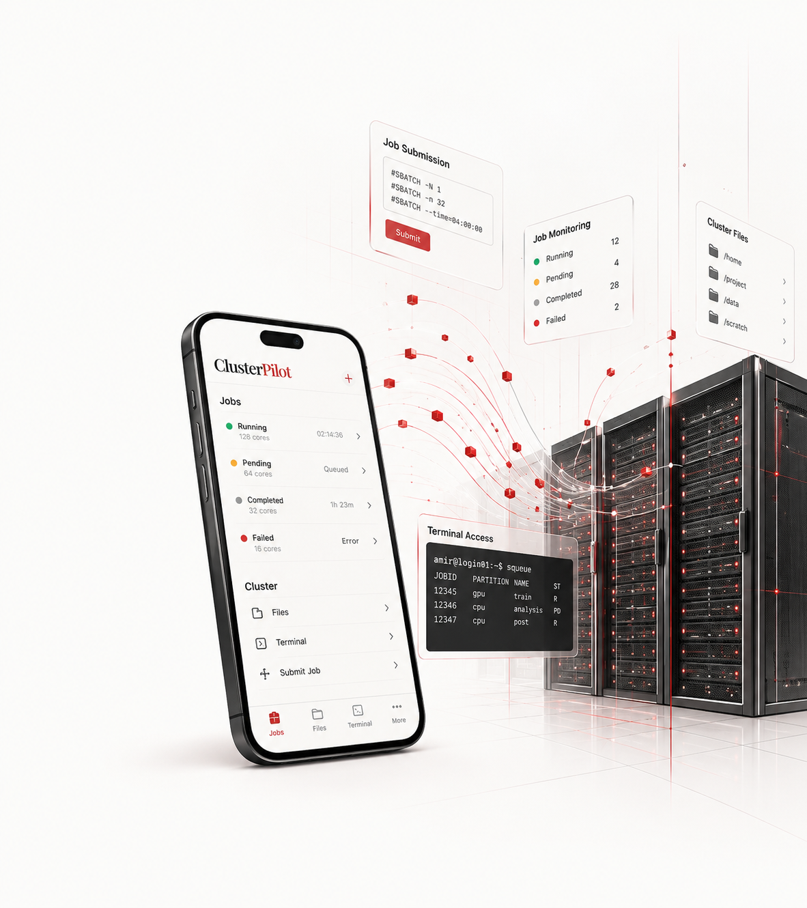
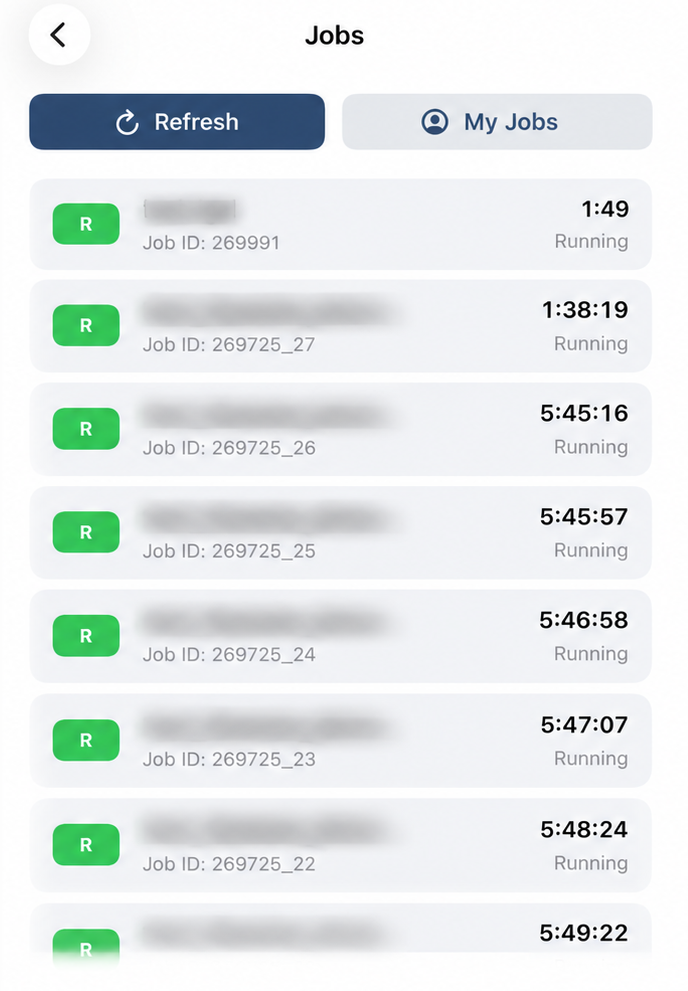
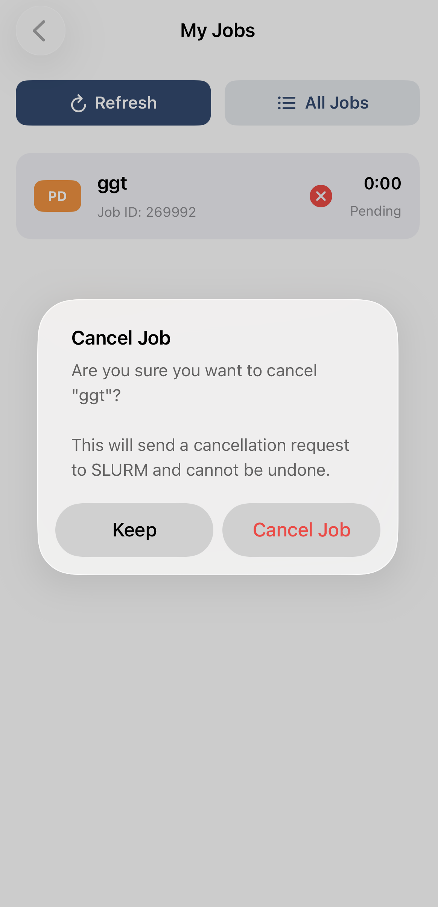
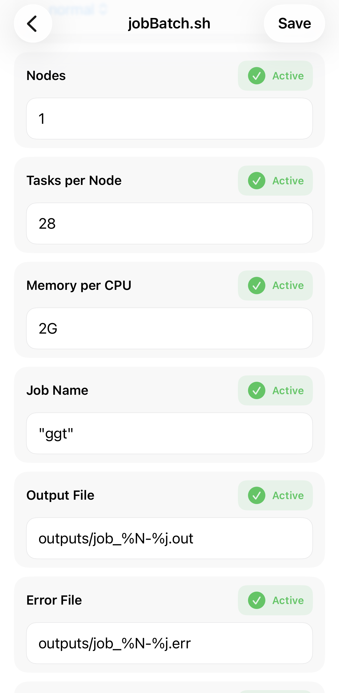
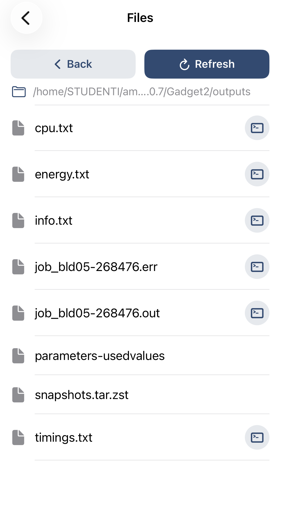
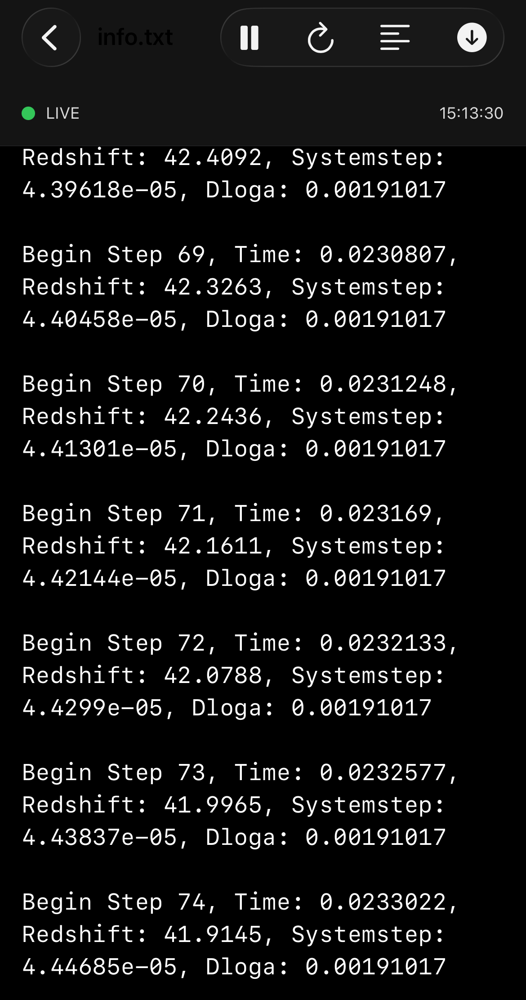

Jobs
Monitor running and pending SLURM jobs, inspect job details, and manage submitted workloads.
APPLE PLATFORMS · HPC
An application for managing HPC clusters, bringing job monitoring, job submission, file management, terminal access, and other cluster workflows into a native Apple interface.
ClusterPilot is currently an evolving prototype. The interface and functionality shown here represent the current development stage, with additional features and improvements planned for the final version.

OVERVIEW
ClusterPilot is being developed as a native interface for working with HPC clusters from Apple devices. The current prototype focuses on common workflows such as monitoring jobs, managing files, configuring submissions, and accessing cluster output.
Monitor running and pending SLURM jobs, inspect job details, and manage submitted workloads.
Configure job parameters and submit batch workloads directly from the application.
Browse directories and access files stored on the HPC cluster.
Access command-line functionality and monitor text output directly from the application.
JOB MANAGEMENT
View running and pending SLURM jobs, track job IDs and runtime, switch between all jobs and your own jobs, and manage submitted workloads.
The current prototype includes separate views for all available jobs and jobs associated with the user, with direct controls for submitted workloads.

Jobs · Monitor cluster workloads
My Jobs · Track submitted workloads

Job control · Cancel submitted workloads
JOB CONTROL
Submitted workloads can be managed directly from the job interface, including cancelling a job without leaving ClusterPilot.
BATCH JOBS
Configure job parameters through a structured interface and submit batch workloads directly from the application.
The interface is designed to make common SLURM submission parameters accessible without requiring every operation to start from the command line.

Batch jobs · Configure a workload
FILES & OUTPUT
Browse cluster directories, access simulation outputs, and view live text output directly from the application.
These capabilities are intended to reduce the need to switch repeatedly between a mobile interface and a traditional terminal workflow.

Files · Browse cluster directories

Live output · Monitor real time
TECHNICAL ARCHITECTURE
ClusterPilot connects a native Apple client with a backend API layer and the underlying HPC environment.
CLIENT
API
CLUSTER
MOBILE
Native Apple application providing the user interface and client-side functionality.
BACKEND
API layer connecting the application with cluster-side operations.
HPC
Job scheduling and computational workloads running on the underlying HPC infrastructure.
INFRASTRUCTURE
Secure communication between the backend and the cluster environment.
PROJECT STATUS
CURRENT STAGE
ClusterPilot is an ongoing software project and the version presented on this page represents the current prototype, rather than the final product.
Development is continuing across the application, backend infrastructure, and HPC integration, with additional functionality planned for future versions.
CLUSTERPILOT